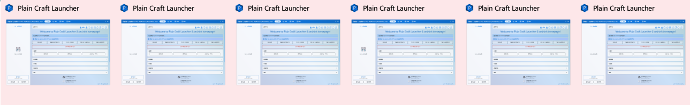

Plain Craft Launcher 2 启动器多开教程
非常实用的教程，使我的 PCL 旋转！建议 Ctrl+D 将本网页收藏起来或
点击此处
打印
方法1
将 PCL2 启动器固定到任务栏，然后疯狂点击它的图标
就像这样：
这样，我们的 PCL2 启动器就会被一次性卡出好几个来了
方法2
使用批处理文件全自动多开 PCL2 启动器
[点击此处下载批处理文件] [点击此处预览批处理文件]
将批处理文件（那个.bat文件）
下载到本地，然后将你的 PCL2 启动器复制到和批处理文件（那个.bat文件）同一个目录下。然后确保 PCL2 启动器的名字为
Plain Craft Launcher 2.exe
（如果没有
.exe
这部分，请关闭“
隐藏已知文件类型的扩展名”。
方法3
快速多次双击 PCL2 启动器的快捷方式或主程序
就像这样：
如下图所示，
如果你看到 PCL2 启动器在任务栏显示有好几个，并且其中还报错了，那么
恭喜你
成功了

：每日一问
：@pcl怎么多开啊（ ()
：先这样后这样再那样最后那样就得了
：这教程不就来了吗
——PCL2 x9